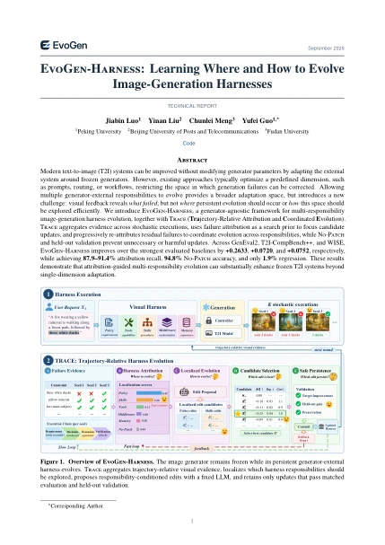

Collect evidence
Aggregate constraint checks over multiple stochastic executions.
EVOGEN-HARNESS / TECHNICAL REPORT
Learning where and how to evolve
image-generation harnesses.
Turn visual failures into targeted, reusable improvements—without updating the image generator’s weights.
“A calico cat wearing a navy polka-dot bow tie…”
Absolute score gains over the strongest evaluated baseline in each benchmark. Reported in Tables 1–3; these are not percentage gains.
01 / SEE THE DIFFERENCE
Different failures call for different changes.
Explore four targeted updates to the external harness.
A red vintage tram crossing a rainy city square at dusk, with four cyclists in reflective yellow jackets riding behind it, and three glowing street lanterns along the left side.
Strengthen an explicit counting constraint in the persistent requirements, rather than changing the generator.
Selected qualitative examples from the report, not an exhaustive evaluation. Original image contents are preserved. Switching examples changes the display; it does not run a model. Middleware is documented in the method and the report’s quantitative analysis.
02 / PROGRESSIVE REPAIR
After each update, TRACE re-examines the remaining failures—so evolution can move to another responsibility.
“A panda sitting on a wooden bench with two red balloons floating on the right side, in a park.”
The generator remains frozen across the sequence. The final output may involve additional responsibility-specific updates; these examples do not imply a single fixed edit sequence for every prompt.
03 / INSIDE THE METHOD
Visual feedback tells us what failed.
It does not, by itself, tell us what to change.
TRACE connects repeated visual evidence to the external decisions that produced it, then explores localized updates.
Keeps the interpretation of requested objects, attributes, counts, and relations explicit. A localized edit can strengthen a requirement that the current harness repeatedly misses.
Trajectory-Relative Attribution and Coordinated Evolution
Aggregate constraint checks over multiple stochastic executions.
Keep a compact frontier of plausible responsibilities—or choose No-Patch.
Explore localized edits under matched generation conditions.
After a useful update, localize the residual failures again.
Keep improvements that pass held-out and preservation checks; otherwise roll back.
04 / BEYOND SELECTED EXAMPLES
Results across instruction following, composition, and world knowledge. Scores below are reported in the technical report.
Fine-grained instruction following across objects, attributes, counting, position, and verbs. Overall scores use prompt-level Soft-TIFA GM.
| Method | Overall score ↑ |
|---|---|
| EvoGen-Harness | 0.7089 |
| Nano Banana | 0.4456 |
| Qwen-Image | 0.3483 |
| Z-Image | 0.3034 |
| OctoT2I | 0.2895 |
| VisualPrompter | 0.2552 |
| Flow-GRPO | 0.2198 |
| FLUX.1-dev | 0.2115 |
| Promptist | 0.2056 |
| NeuroPrompts | 0.1976 |
| Janus-Pro | 0.1878 |
| BeautifulPrompt | 0.1134 |
| Idea2Img | 0.0586 |
| GenArtist | 0.0556 |
| ChatGen | 0.0388 |
Default EvoGen-Harness generator: FLUX.1-dev. Baseline configurations follow the report; different standalone models are also evaluated. This is a summary of the manuscript, not an independently reproduced or continuously updated leaderboard.
In the reported GenEval2 inference setting, EvoGen-Harness takes 42.6 s per prompt versus OctoT2I’s 10.0 s, with 1.4 vs. 1.3 generator calls. Evolution-time search is a separate cost. See Tables 5 and 9 for the full accounting
THREE FROZEN BACKBONES
0.21150.7089
0.34830.7594
0.18780.7002
Each harness is evolved separately for its frozen backbone; this is not zero-shot transfer of one evolved harness. Scores: Table 4. Selected images: Figure 7. View original prompts and figure

05 / READ. REPRODUCE. BUILD.
EvoGen-Harness: Learning Where and How to Evolve Image-Generation Harnesses
Method, experimental settings, ablations, additional examples, and the Harness Localizer prompt—in one 23-page technical report.
Download PDFThis site is an interactive research showcase, not a hosted image-generation service. Check the repository for implementation availability.
@article{luo2026evogen,
title={EvoGen-Harness: Learning Where and How to Evolve Image-Generation Harnesses},
author={Luo, Jiabin and Liu, Yinan and Meng, Chunlei and Guo, Yufei},
journal={arXiv preprint arXiv:2610.00383},
year={2026}
}No. The framework changes persistent generator-external responsibilities while keeping the generator’s weights frozen. The report also uses fixed LLMs for attribution and edit proposal.
Prompt optimization chooses a predefined adaptation target. EvoGen-Harness opens five external responsibilities to evolution; TRACE uses execution evidence to focus where edits are explored and revisits that decision after each accepted update.
No. The controls replay and compare existing outputs from the paper. This static website has no inference backend, API key input, or live model connection. Visit the repository for implementation status.
No. The gallery contains selected examples, not guaranteed outcomes. Correct attribution does not ensure a successful edit, and stochastic variation and verifier errors remain possible. TRACE uses No-Patch and held-out validation to limit unnecessary or harmful persistent updates. The report discusses these limitations and computational costs.
Explore the evidence. Read the method.
Build on the research.